GOOGLE · 2025 – 2026
Google Contacts: AI-Powered Contact Intelligence
Leadership handed the team a one-year AI mandate with no clear problem attached. I ran the sprint that aligned engineering and PM around a real user problem, and turned it into 3 shipped features reaching 4M DAU.
WHERE WE STARTED
The Brief
No One Could Define
Google Contacts had always been a passive repository. In 2025, a company-wide AI push landed on the team with a deceptively simple brief: automatically capture the people users interact with across Google. My job wasn't to design features but to lead the team out of ambiguity by defining the problem.
As lead product designer, I ran the research that reframed the brief, led the sprint that aligned Engineering and PM around it, and turned it into 3 features that shipped to production.
1 · MAGIC CUE & SAVE
2 · GEMINI x CONTACTS SYNC
3 · GMAIL CONTACT INFO EXTRACTION
METRICS
PROBLEM FRAMING
We Had a Solution
We Didn't Have a Real User Problem
Leadership's brief came with pressure to ship AI fast and summed it up in one tag line: "Hey Google, remember everyone for me". It was exciting in theory, but in practice, the statement was highly ambiguous and not grounded in user evidence.

ALIGNING THE TEAM
A Design Sprint
to Find the Real Problem
Before opening Figma, I spent a week running alignment. A multi-year AI bet with no shared problem definition drifts. I ran a two-day cross-functional sprint built around one question: do people actually struggle with information about who they interact with across Google? The sprint produced three Critical User Journeys (CUJs) that became the test for every feature decision after.
- People context saved in Google Contacts gets lost across Google Ecosystem
- Contact info shared in conversations / email content is hard to retrieve
- Physical-to-digital handoff is broken at networking events
LEADING VIBE CODING SESSION WITH XFN PARTNERS
VALIDATION
Testing Privacy Edge Cases
With Rapid Research
The CUJ map became the standing evaluation criteria, allowing new ideas to be tested against it in minutes instead of another round of research. We tested a scenario in a qualitative UXR: a friend has shared their address, gate code, and Venmo handle, and Contacts auto-saved all of it. We wanted to better understand users' perception of automating contact curation.
1 · CONVERSATION

2 · CONTACT CARD

3 · REVIEW SUGGESTIONS

REFRAMING
Users Want Assistance
Not Automation
Going into the UXR, we expected research to confirm people wanted automatic contact capture. Instead it pushed us to change direction. Two things came out of it: 1) The interaction model worked, but only for low-sensitivity data. Phone numbers and email felt safe, but gate codes and social handles felt like a privacy violation to users. 2) Users expect AI to be an agent, not a decision maker. They wanted to review suggestions and choose what to keep, not discover that Google had silently saved information about them. The ability to dismiss a suggestion mattered as much as the suggestion itself.
With my research partner, I translated findings into 3 design principles — non-negotiable constraints for every feature we built:
CONTROL
Users decide
CONTEXTUAL & TIMELY
Right place, right time
SENSITIVITY & TRUST
Not all data is equal
These principles also forced a rewrite of the original problem statement — the most visible artifact of how research changed the product was a pivot in our problem statement:
ORIGINAL
HMW automatically capture and organize the people users interact with across Google services
REVISED
HMW use AI to provide contextual & timely contact info suggestions so users can curate their contacts with trust & control
SHIPPED DESIGN
1. Gemini x Contacts Sync
Solving CUJ 1
CUJ 1 was about piecing the fragmented experience across Gemini and Google apps together. The context that users had saved to Contacts like Alessa's email address was not accessible by Gemini, even though users would expect that knowledge to carry over across the Google ecosystem, including Gemini. In this project, we integrated the Contacts database with Gemini to form a Personal Intelligence knowledge graph, allowing users to manage contact information and communicate with their contacts via Gemini.
Inserting intentional friction
Our research made one thing clear: users treat contact data as personal, curated and high-stake data. So I designed a confirmation layer into every Gemini inferred action that touches a contact record, having user evaluation instead of passive rubber-stamping. Any mutation, such as saving a relationship, updating a field, creating a contact, surfaces an HITL (human-in-the-loop) confirmation card before anything is written. One tap to approve, and nothing changes without it. Dismissal got the same design attention as approval. This is the design principle that made the feature trustworthy at scale.
Getting a Rough MVP In Front of Users Fast
MVP (SHIPPED FIRST)


IDEAL (NORTH STAR)


Since we were one of the first Google apps building on Gemini's HITL approval framework, which meant there was no established pattern to follow, and the ideal version of our confirmation UX couldn't ship on our extremely tight timeline.
The call I made: ship the rough version and iterate. I designed the full ideal experience first, establishing what "great" looked like for users, then worked backward with engineering to scope what could ship within the constraints. The MVP wasn't a compromise. It was a deliberate starting point for gathering real behavioral signal from real users, which no amount of internal prototyping could replicate, because a live feature with rough edges teaches you more than a perfect prototype that never ships.
HITL CONFIRMATION CARD EXPLORATIONS
OPTION A · EXPANDED DETAILS

OPTION B · STACKED ACTIONS

OPTION C · MULTI-CONTACT BATCH

OPTION D · COLLAPSED INLINE

Designing Deterministic UX Evals for Google Contacts' AI Agent
To de-risk an autonomous contact-creation agent inside Google Contacts, I built a multi-tier UX eval framework that moved QA from subjective spot-checks to deterministic, regression-tested benchmarks. Instead of grading the model on conversational fluency, I curated a golden dataset of 100+ edge cases — unformatted phone numbers, multi-turn entity corrections, duplicate records. That eval-driven process reduced contact-overwrite errors significantly, calibrated the friction thresholds for our inline confirmation cards, and set the team's design criteria for deploying state-altering agentic tools across Google apps.
CALENDAR

GMAIL

GOOGLE ACCOUNT

Defining Primitives for New MCP Capabilities
Pioneering undefined patterns came with unique challenges; there were no playbooks or established frameworks to follow. By architecting the HITL framework for sensitive actions from scratch, the work transcended a single feature launch. The framework was adopted by Gmail, Google Account, and other first-party apps.
METRICS
SHIPPED DESIGN
2. Gmail AI Extraction
Solving CUJ 2
CUJ 2 was about turning AI into a smart assistant that simplifies user's mundane tasks. In Gmail, most of the time users knew the contact information existed in the email body and signature, but didn't care to act on it due to a tedious copy-paste process. We know that the friction wasn't finding the information, but the twelve steps between reading it and having it in Contacts. Therefore, the design goal was to collapse those steps to one, without making users feel like Google was silently reading their mail.
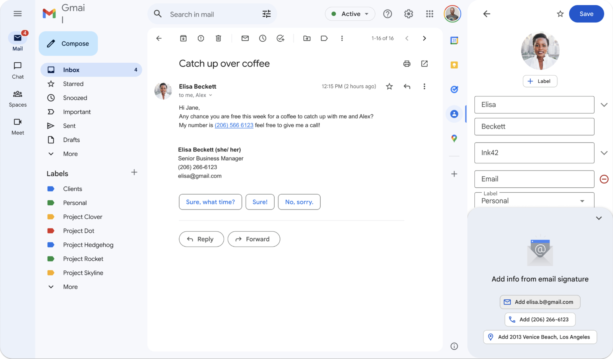
Choosing the Pattern that Matches User Intent
Someone who opens the editor is there to make a change (manage), so the suggestion isn't an interruption. That match between surface and intent is what made the feature feel helpful instead of intrusive. Within the editor, I tested four patterns: Autocomplete, Chips, Bottom Sheet, Top Card. The choice wasn't about which looked best. It was about which one met a trust requirement from the research: users needed to see where the information came from before they'd act on it.
1 · AUTOCOMPLETE
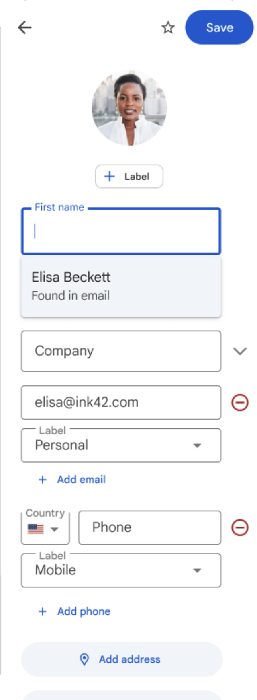
2 · CHIPS
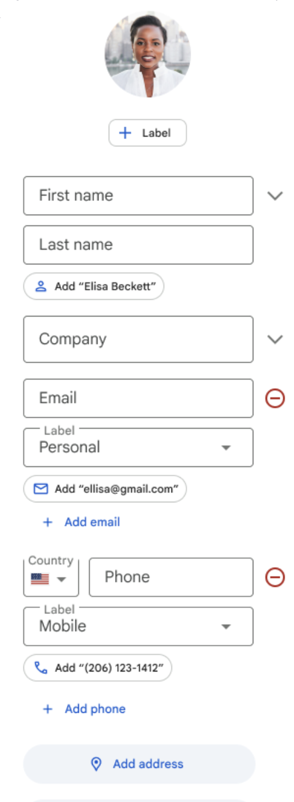
3 · BOTTOM SHEET (CHOSEN)
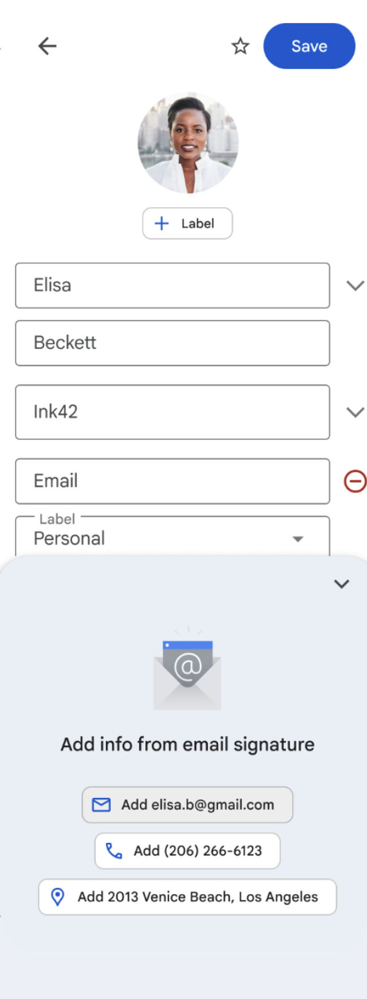
4 · TOP CARD
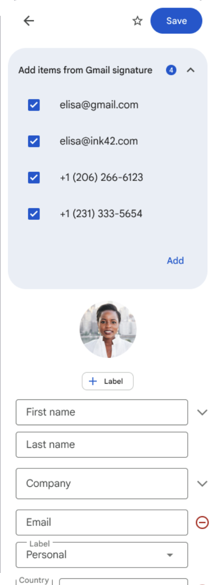
Displaying Data Provenance Traces for Transparency
The Bottom Sheet was the only pattern that put source attribution first. "Found in Gmail signature" appears before the data, before the action button, exactly the sequence the research demanded. The rest of the patterns treated attribution as a footnote. This design treated it as the headline, establishing a UI pattern that answers "why was this generated" up front, which is what our users needed in order to trust it.
Designing for When the Model is Wrong
To diagnose why users dismiss suggestions, we implemented an in-context feedback micro-survey that triggers immediately upon a dismissal event. Designed with lightweight interaction constraints to minimize cognitive load, the modal presents predefined categorical chips representing our core failure hypotheses, such as "Confusing," "Inaccurate Data," and "Annoying", paired with an optional open-text field for qualitative context. By aggregating the selected categories, we converted ambiguous drop-off points into quantifiable failure distributions, allowing our product and engineering teams to isolate whether friction stemmed from UI affordances, algorithmic accuracy, or intrusive cadence. We then paired these aggregated volume metrics with the open-text verbatims to systematically prioritize model prompt refinements and adjust user-prompting thresholds.
METRICS
SHIPPED DESIGN
3. Magic Cue & Magic Save for Contacts
Solving CUJ 2
Contact info exchanged in a messaging conversation isn't actionable before this feature. Users miss info a sender shares, or dig manually for info a sender asks them for. In this project, we launched Magic Save and Magic Cue:
Magic Save: sender provides contact info → chip suggests saving it to Contacts
Magic Cue: sender asks for info already in your Contacts ("what's your car dealer's number?") → surfaces as a suggestion, one tap to share
When We Aren't Confident About the Data
I partnered with the Pixel team to define the prompt logic that surfaces suggestions without eroding trust, and designed what happens after a tap, both the save/share flow and how the info lands on the contact card. We tiered the UX by confidence and sensitivity: high-confidence, low-sensitivity data could surface inline. Anything uncertain or personal required explicit review. For example, gate codes and social handles felt like violations regardless of presentation, so the right design decision was to leave them out.
VERY HIGH CONFIDENCE
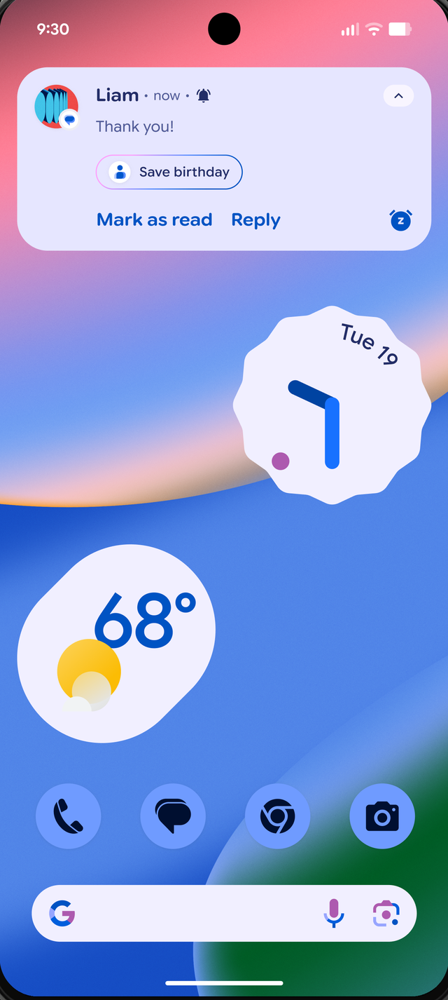
HIGH CONFIDENCE
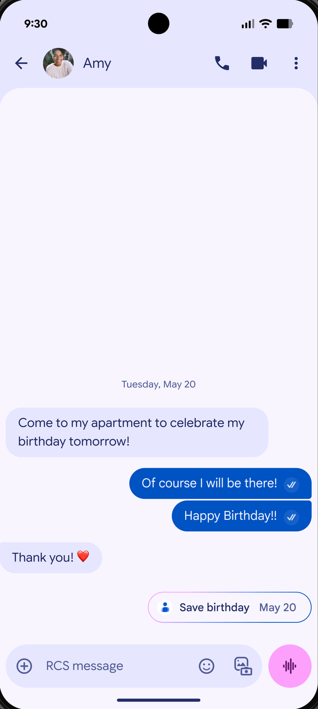
MIDDLE CONFIDENCE
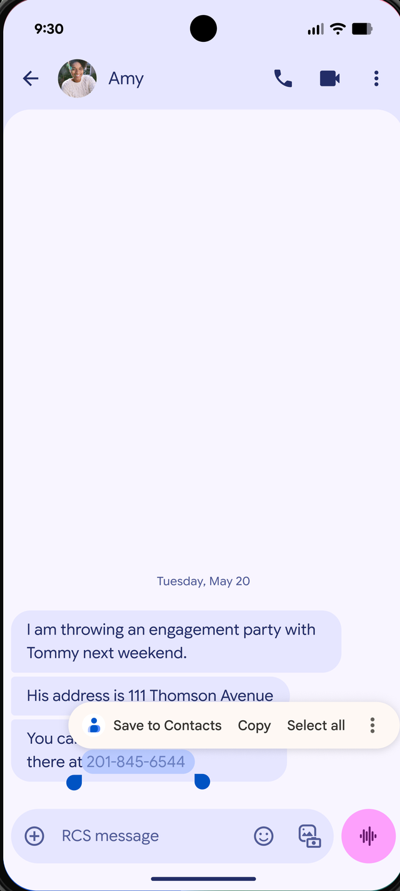
Confidence & Ambiguity Scaffolding
While people generally trust Google's accuracy, the extraction model isn't right 100% of the time. To navigate I designed an interface mechanic that adjusts based on model certainty thresholds. For example, rendering direct deterministic actions when the suggestion confidence is 95% or above, suggestive inline diffs when between 70-94%, and guided clarification dialogs when under 70%.
MAGIC SAVE CONFIRMATION EXPLORATIONS
EXPLORATION 1
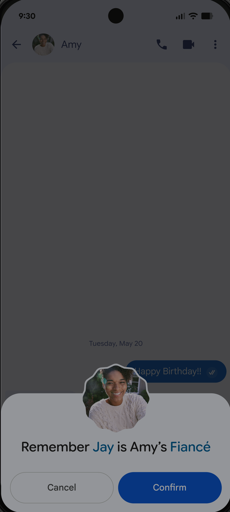
EXPLORATION 2
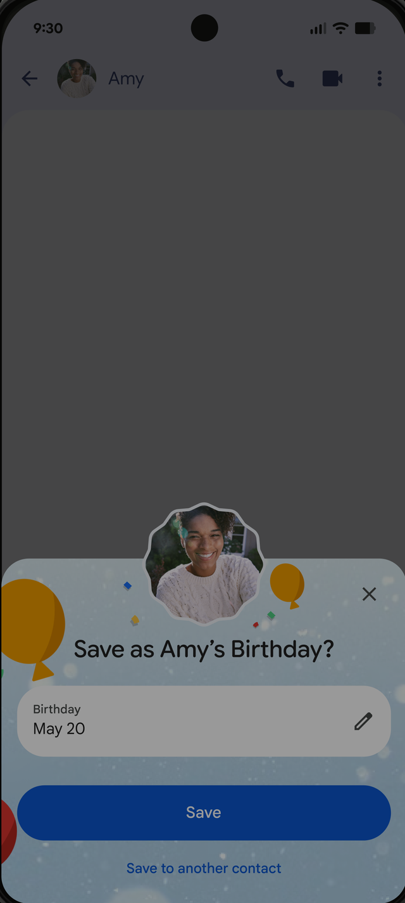
EXPLORATION 3
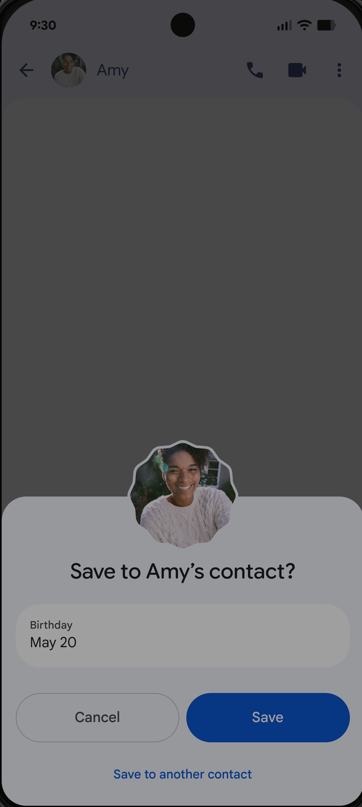
EXPLORATION 4
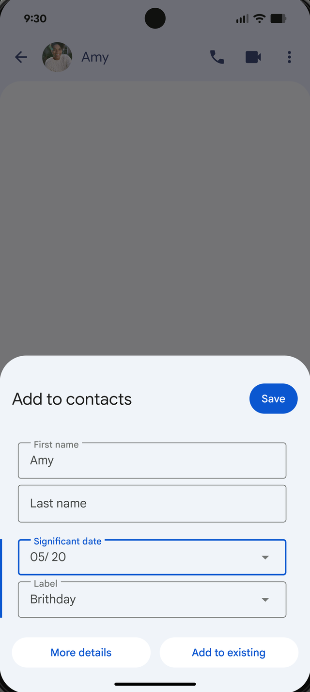
Introducing Friction Modulation
The UX also drew a careful line between different actions. Magic Cue keeps the interaction to a single tap: the suggested information is surfaced, the user taps on it, it's done. Magic Save takes two: tap to select, then a confirmation sheet that shows exactly what will be written and lets users correct it before committing. The extra step exists because the stakes are different.
Even though we shipped Exploration 4 for MVP, the ideal was Exploration 2 and we have it as a fast follow. The reason we shipped Exploration 4 was to optimize for editability for the names, as we weren't confident how accurate the model was for MVP. We shipped Exploration 4 and tracked the edit rate for the name and the added data.
REFLECTION
Learnings
Ship fast and learn from real world users
In the world of AI, ship the rough version and iterate. When designing for interaction patterns that don't already have a precedent yet, always try to gather real behavioral signal from real users, which no amount of internal prototyping could replicate — because a live feature with rough edges teaches you more than a perfect prototype that never ships.
When business strategy is the starting point
Not all projects begin with a user problem. Sometimes we need to look for problems to solve, instead of solutions to have. When the starting point is a business strategy, the designer's role is figuring out the right user-centric approach to make that strategy successful. Our task was to translate that high-level business goal into a valuable and well-received user experience, which required deeply understanding user expectations to find the right solution.
User trust isn't one thing
User trust isn't one thing — it is contextual, relational, and depends on the type of data involved. That understanding shaped how we handled privacy UX across the roadmap, not just in the features I designed directly.